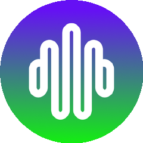

100m80m60m40m20m
第 27 周
6 月 22 — 29 日 · GitHub 周榜
14
个涨星最猛的项目
+18,703
最高单周涨星
5
大领域分组
| 00| 25| 50| 75| 99
AI Agent
本周涨星最猛的领域 · 4 个项目

calesthio / OpenMontage
AI 编程助手变视频工作室
+18,703
本周涨星
AI Agent

DeusData / codebase-memory-mcp
代码库索引成知识图谱
+8,926
本周涨星

Panniantong / Agent-Reach
一条命令读遍全网
+7,692
本周涨星

topoteretes / cognee
给 AI 装长期记忆
+6,064
本周涨星
视频创作工具
AI 做视频 / 语音 / 设计 · 3 个项目
palmier-io / palmier-pro
mac 上剪 AI 视频
+5,034
本周涨星

jamiepine / voicebox
开源 AI 语音工作室
+3,883
本周涨星
google-labs-code / design.md
让 agent 看懂设计稿
+6,728
本周涨星
AI 编程工具
agent IDE / 网页控制 / 应用框架 · 3 个项目

stablyai / orca
一屏跑多个编程 agent
+2,769
本周涨星

alibaba / page-agent
阿里出品 · 话控网页
+1,778
本周涨星
BuilderIO / agent-native
造 agent 应用框架
+1,540
本周涨星
数据情报看板
AI 看盘 · 全球情报 · 2 个项目

ZhuLinsen / daily_stock_analysis
AI 看盘零成本定时跑
+7,045
本周涨星

koala73 / worldmonitor
一屏看全球情报
+2,845
本周涨星
安全隐私
网络安全技能 · 无 ID 加密 · 2 个项目
mukul975 / Anthropic-Cybersecurity-Skills
八百多安全技能喂 AI
+5,212
本周涨星
simplex-chat / simplex-chat
无用户标识的加密消息
+3,218
本周涨星
100m80m60m40m20m
第 27 周周榜
就 到 这
想试哪个，留言告诉我
关注 GitHub 星探
下 周 见